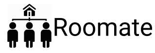
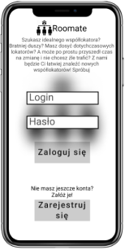
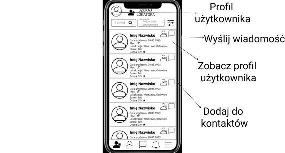
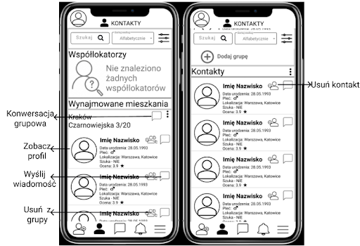
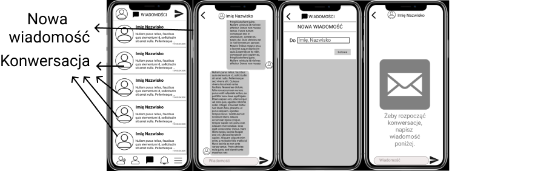
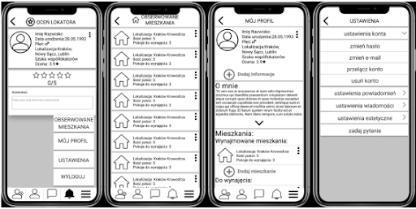
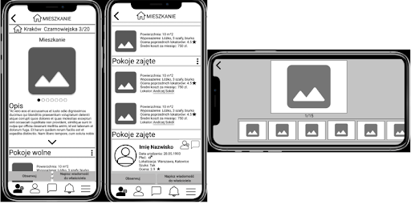

Wsparcie w poszukaniu współlokatora - Roomate
O PROJEKCIE
54% ludzkiej populacji żyje dzisiaj w miejskich społecznościach, średni wiek ożenienia się przez mężczyznę wynosi 29 lat (26 lat dwie dekady temu) i wyjścia za mąż przez kobietę wynosi 27 lat (z 23 w tym samym okresie czasu). Przez istniejący trend mieszkańcy miast mają skłonności do przeżycia większości swoich lat dwudziestych żyjąc ze współlokatorami. Znalezienie i zatrzymanie na dłużej dobrego współlokatora staje się coraz trudniejsze, ze względu na to, że coraz więcej ludzi przybywa do miast.
| ZROBIONE JAKO: | ĆWICZENIE |
| ZAKOŃCZONO: | 10.2019 |
Empatyzacja
Persony:
Imię Nazwisko: Paweł Nowak
Wiek: 19 lat.Opis: Paweł to świeżo upieczony maturzysta - zaczyna ciężkie studia.
Kocha ludzi, nie cierpi samotności. Myśli poważnie o życiu i o studiach.
Pragnie:
- Chęć do znalezienie współlokatorów, do wynajęcia wspólnego mieszkania
- Chęć ciszy i spokoju w mieszkaniu.
- Chęć kładzenie się spać kiedy ma na to ochotę.
- Chęć znalezienia bratniej duszy.
- Chęć do nie zawalenia studiów.
Boi się:
- Braku strefy komfortu
- Problematycznego współlokatora
= Nadmiernego stresu
- Niezaliczenia semestru
- Wylecenia ze studiów
- Potrzeby zmiany lokalizacji
Imię Nazwisko: Kasia Kowalska
Wiek: 25 latOpis: Kasia skończyła właśnie studia magisterskie i straciła współlokatorkę z którą żyła w jednym mieszkaniu od początku studiów. Ma już pracę, którą teraz rozpoczyna na pełny etat. Lubi ludzi, ale potrzebuje też chwil na wyciszenie. Nie może znieść nadmiernego brudu w mieszkaniu.
Pragnie:
- Chęć posiadania czystości w mieszkaniu.
- Posiadanie sfery w której może się wyciszyć/odciąć od świata.
- Znalezienie uczciwej i kompromisowej współlokatorki.
- Chęć znalezienia bratniej duszy.
Boi się:
- Ryzykować
- Kradzieży
- Zawiedzenia
- Nadmiernego stresu
Wstęp:

Ze względu na wiek grupy odbiorców (20 - 30 lat), rozwiązaniem zaproponowanym przeze mnie jest aplikacja pozwalająca użytkownikom w głównej mierze na nawiązywanie kontaktu między sobą.
Zaproponowana nazwa aplikacji to: Roomate. (Poniżej zaproponowane logo wraz z nazwą)
Nazwa krótka, łatwa do zapamiętania i powiązana z tematyką.
Jeżeli aplikacja miałaby tylko za zadanie nawiązywać kontakt pomiędzy różnymi użytkownikami to po co byłaby potrzebna w erze facebook-a, instagram-a, snapchat-a i wielu innych platform pozwalających na nawiązywanie relacji online?
Otóż jak się można spodziewać, aplikacja nie jest nastawiona głównie na szukanie znajomych i relacji online, a na szukanie współlokatorów, lokatorów, mieszkań w łatwy i intuicyjny sposób.
Prototyp został stworzony w języku polskim, co oczywiście nie wyklucza dodawania kolejnych wersji językowych aplikacji.
Podstawowe funkcje aplikacji:
Szukanie lokatorów / współlokatorówSzukanie mieszkania / pokoju
Zbieranie kontaktów
Wysyłanie wiadomości
Tworzenie wirtualnych odzwierciedleń realnych wspólnot mieszkaniowych
Landing Page

Strona jaką zobaczy użytkownik zaraz po pobraniu aplikacji. Zawiera standardową możliwość zalogowania się, oraz ciężkie do przegapienia okno przekierowujące na stronę umożliwiającą rejestrację. Możliwość rejestracji została umieszczona w dolnej części ekranu ze względu na wielkość ekranu - ekran jest duży, więc umieszczając okno rejestracji np. w górnej części ekranu mogłoby to spowodować zmniejszenie liczby rejestrujących się użytkowników.

W górnej części ekranu, pod logiem został umieszczony opis aplikacji, który przedstawia podstawowe funkcje aplikacji oraz zachęca do jej użycia.
Rejestracja:

W oknie rejestracji ze względu na mały stosunek chętnych do czytania regulaminu, a potrzebę jego zaakceptowania zamiast wymuszać na użytkoniku klikania w jeden dodatkowy check-box zrobiłem automatyczną akceptację regulaminu informując użytkownika o tym oraz dając możliwość przejrzenia go po kliknięciu w link.
Szukaj lokatora:

Jest to strona, która wyświetla się użytkownikowi zaraz po zalogowaniu do aplikacji. Dlaczego? Ponieważ jej głównym zadaniem jest właśnie szukanie lokatorów.
Do każdego z nich można wysłać zaproszenie do kontaktów, wysłać wiadomość, lub po prostu przejrzeć ich profil.
Kontakty:

W kontaktach mamy możliwość zarówno tworzenia grup mieszkaniowych. Kontaktowania się ze swoimi współlokatorami, posiadania zwyczajnych kontaktów. Możliwość przeszukiwania, filtrowania, sortowania kontaktów powinna ułatwić potrzebę znalezienia odpowiednich osób. W każdej z grup kontaktowych została zawarta możliwość dodatkowych opcji takich jak np. zmianę widoku, zablokowanie użytkownika, itd.
W górnej części ekranu, pod logiem został umieszczony opis aplikacji, który przedstawia podstawowe funkcje aplikacji oraz zachęca do jej użycia.
Wiadomości:

Przy tworzeniu interfejsów służących do korespondencji starałem się inspirować znanymi aplikacjami, takimi jak: Instagram, facebook, wiadomości w iPhone-ach. Wynika to z potrzeby intuicyjności i sprawnego działania tej części aplikacji. Każde z okien wiadomości otwiera konwersacje z daną osobę, czy też konwersację grupową.
Powiadomienia:

Do ekranu powiadomień stworzyłem dodatkowo 2 podstawowe z nich: ocena lokatora oraz akceptacja / odrzucenie zaproszenia od innego użytkownika.
Powiadomienia:

Menu zostało przeze mnie ułożone pod względem prognozowanej częstotliwości odwiedzania poszczególnych ekranów przez użytkownika (może ulec to zmianie, dlatego ułożenie może się zmienić).
Mieszkania:

Ekrany odnośnie mieszkań występują w 3 różnych miejscach funkcyjnych aplikacji, można je zobaczyć wchodząc z ekranu “mój profil”, “profil innego użytkownika”, “obserwowane mieszkania” . Ekrany przedstawione na powyższych screenshot-ach pochodzą z drugiej opcji - “profil innego użytkownika”. W pozycji “mój profil” ekran mieszkanie nie posiada dodatkowych funkcji takich jak: “obserwuj”, “napisz wiadomość do użytkownika”, a w pozycji “obserwowane mieszkania” zamiast opcji “obserwuj, jest opcja “odobserwuj”. Trzeci ekran przedstawia powiększone zdjęcie (pojawia się po kliknięciu w zdjęcie) - uznałem, że odpowiednią opcją będzie zmiana ekranu z pionowego na poziomy, ze względu na to, że mało jest zdjęć mieszkań w pozycji pionowej, więc i ekran w pozycji pionowej nie pokazałby dużo więcej po powiększeniu zdjęcia do trybu pełnoekranowego.